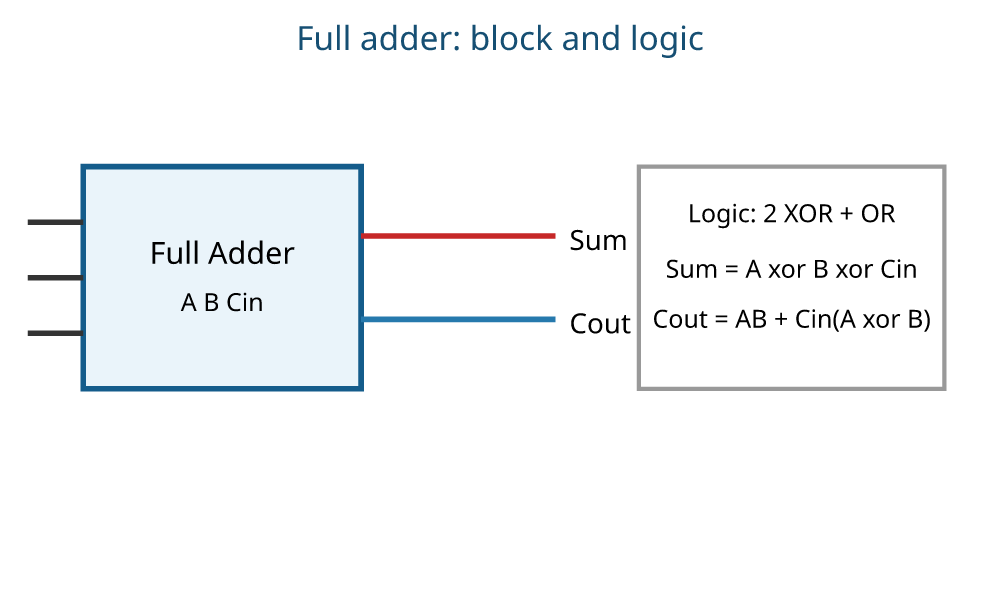
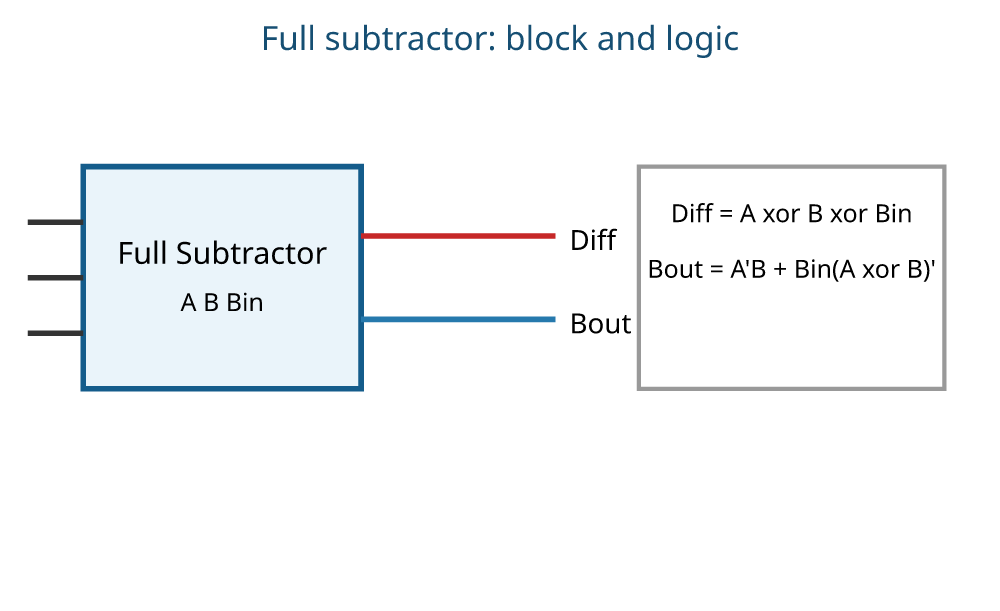
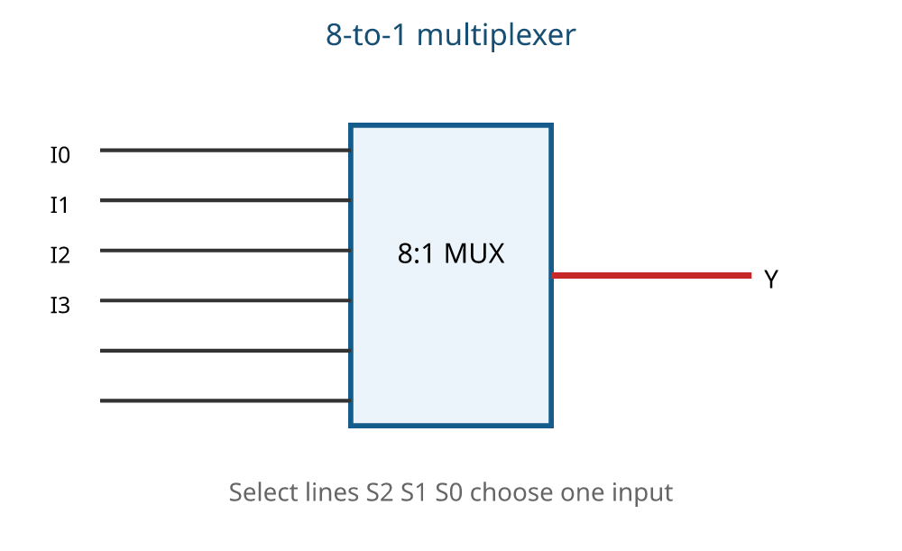
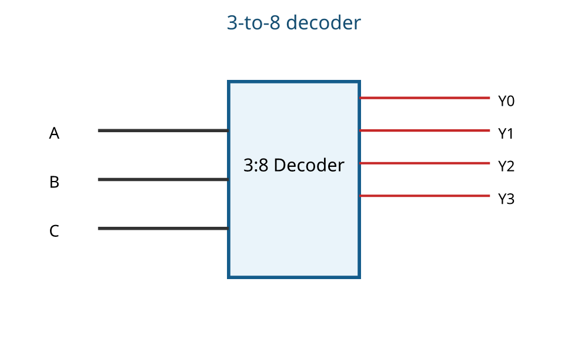
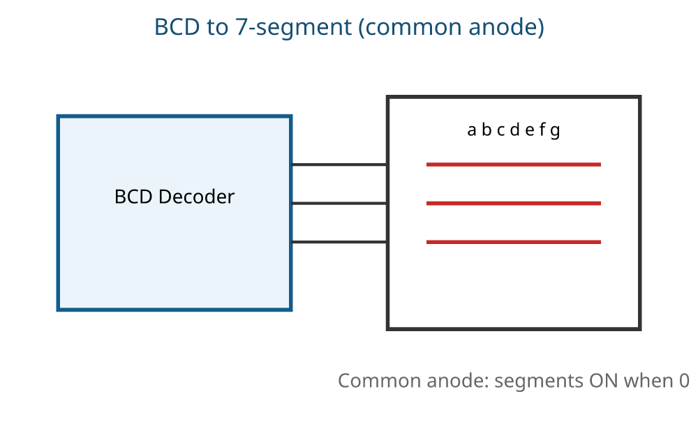
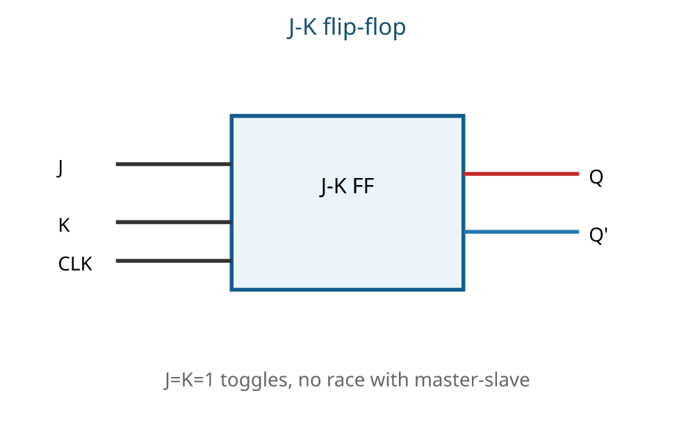
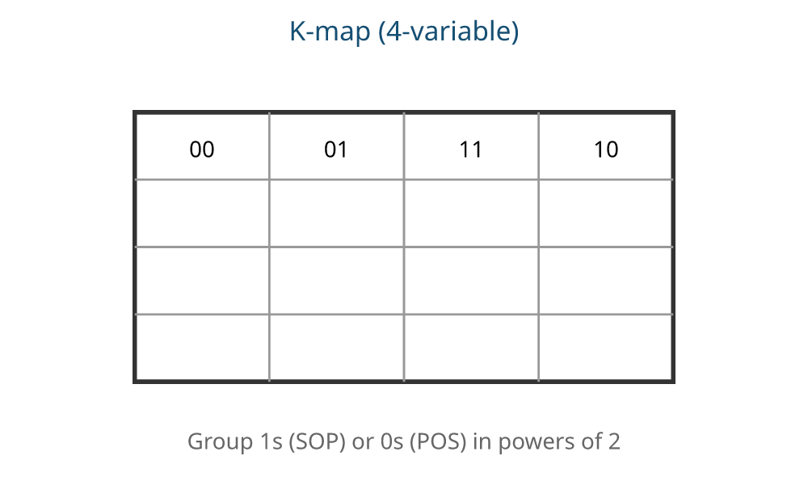

Supplied unofficial study solution, not an official GTU answer key. Answers and teaching diagrams have not been independently verified. Use Enlarge image for small details.આ આપેલો બિનસત્તાવાર અભ્યાસ ઉકેલ છે, સત્તાવાર GTU જવાબવહી નથી. જવાબો અને આકૃતિઓની સ્વતંત્ર ચકાસણી થઈ નથી. વાંચવા માટે ચિત્ર મોટું કરો.
Fundamental of Digital Electronicsડિજિટલ ઇલેક્ટ્રોનિક્સના પાયા
Complete paper coverage: all 28 answer parts are included. Q1(c) and Q2–Q5 include complete OR alternatives; both choices are answered. One paper with English and Gujarati — use the language buttons above to switch. Gujarati is friendly (about 70% Gujarati) with main English keywords kept direct (Capacitor, alternating, Flip-flop, Decoder, etc.). Same content in both languages, only language changes.આખા paperનો સમાવેશ: બધા 28 જવાબ ભાગો છે. Q1(c) અને Q2–Q5માં સંપૂર્ણ OR વિકલ્પો છે; બંને પસંદગીઓના જવાબ છે. એક જ paperમાં English અને ગુજરાતી છે — ઉપરના English / ગુજરાતી button દબાવીને ભાષા બદલો. ગુજરાતી friendly છે (લગભગ 70% ગુજરાતી) અને મુખ્ય English keywords direct રાખેલા છે (Capacitor, alternating, Flip-flop, Decoder, વગેરે). બંને ભાષામાં same content છે, ફક્ત ભાષા બદલાય છે.
How to read: tap any card to open its answer. Formulas are in blue boxes, final answers in green boxes. Diagrams are original teaching schematics.કેવી રીતે વાંચવું: જવાબ ખોલવા કોઈપણ card પર ટેપ કરો. સૂત્રો વાદળી બોક્સમાં, અંતિમ જવાબ લીલા બોક્સમાં છે. આકૃતિઓ મૂળ શિક્ષણ આકૃતિઓ છે.
Q1 · Number systems and addersપ્ર.1 · Number system અને Adder
Q.1 (a) State different types of codes and explain Excess-3 code.પ્ર.1 (અ) Different types of codes જણાવો અને Excess-3 code સમજાવો.3 marks3 ગુણ
Types of codes: Binary code, BCD (8421) code, Excess-3 (XS-3) code, Gray code, ASCII code, Alphanumeric code.
Excess-3 code: Unweighted code where each decimal digit is represented by its binary equivalent plus 3. Self-complementing code: 9's complement is obtained by inverting bits.
| Decimal | Binary | Excess-3 (+3) |
|---|---|---|
| 0 | 0000 | 0011 |
| 1 | 0001 | 0100 |
| 5 | 0101 | 1000 |
| 9 | 1001 | 1100 |
Example: 7 decimal = 0111 + 0011 = 1010 in Excess-3.
Types of codes (કોડના પ્રકાર): Binary code, BCD (8421) code, Excess-3 (XS-3) code, Gray code, ASCII code, Alphanumeric code.
Excess-3 code (એક્સેસ-3 કોડ): Unweighted code છે જેમાં દરેક decimal digit ને તેના binary equivalent માં 3 ઉમેરીને દર્શાવવામાં આવે છે. Self-complementing code છે: 9's complement bits invert કરીને મળે છે.
| Decimal | Binary | Excess-3 (+3) |
|---|---|---|
| 0 | 0000 | 0011 |
| 1 | 0001 | 0100 |
| 5 | 0101 | 1000 |
| 9 | 1001 | 1100 |
Example: 7 decimal = 0111 + 0011 = 1010 Excess-3 માં.
Q.1 (b) (i) Octal (45307)8 to Hexadecimal. (ii) Octal (7632)8 to decimal.પ્ર.1 (બ) (i) Octal (45307)8 ને Hexadecimal માં ફેરવો. (ii) Octal (7632)8 ને decimal માં ફેરવો.4 marks4 ગુણ
(i) (45307)8 to Hex: Octal to binary (3 bits each): 4=100, 5=101, 3=011, 0=000, 7=111 → 100101011000111. Pad to 4 bits: 0100 1010 1100 0111 → 4 A C 7.
Check decimal: 4×4096+5×512+3×64+7 = 19143. Hex 4AC7 = 4×4096+10×256+12×16+7 = 19143. Correct.
(ii) (7632)8 to decimal: 7×83+6×82+3×8+2 = 7×512+6×64+24+2 = 3584+384+24+2.
(i) (45307)8 to Hexadecimal: Octal થી binary (દરેક 3 bits): 4=100, 5=101, 3=011, 0=000, 7=111 → 100101011000111. 4 bits સુધી pad કરો: 0100 1010 1100 0111 → 4 A C 7.
Check decimal: 4×4096+5×512+3×64+7 = 19143. Hex 4AC7 પણ 19143 જ છે. Correct.
(ii) (7632)8 to decimal: 7×83+6×82+3×8+2 = 3584+384+24+2.
Q.1 (c) Explain full-adder with block diagram, logic diagram, truth table and working.પ્ર.1 (ક) Full-adder block diagram, logic diagram, truth table અને working સાથે સમજાવો.7 marks7 ગુણ
Block diagram: Inputs A, B, Cin (carry-in). Outputs Sum and Cout (carry-out).
Logic equations:
Truth table:
| A | B | Cin | Sum | Cout |
|---|---|---|---|---|
| 0 | 0 | 0 | 0 | 0 |
| 0 | 0 | 1 | 1 | 0 |
| 0 | 1 | 0 | 1 | 0 |
| 0 | 1 | 1 | 0 | 1 |
| 1 | 0 | 0 | 1 | 0 |
| 1 | 0 | 1 | 0 | 1 |
| 1 | 1 | 0 | 0 | 1 |
| 1 | 1 | 1 | 1 | 1 |
Working: Two half-adders + OR gate. First HA adds A+B, second adds result + Cin. OR gives Cout. Used in multi-bit adders.

Block diagram (બ્લોક ડાયાગ્રામ): Inputs A, B, Cin (carry-in). Outputs Sum અને Cout (carry-out).
Logic equations (લોજિક સમીકરણો):
Truth table (ટ્રુથ ટેબલ):
| A | B | Cin | Sum | Cout |
|---|---|---|---|---|
| 0 | 0 | 0 | 0 | 0 |
| 0 | 0 | 1 | 1 | 0 |
| 0 | 1 | 0 | 1 | 0 |
| 0 | 1 | 1 | 0 | 1 |
| 1 | 0 | 0 | 1 | 0 |
| 1 | 0 | 1 | 0 | 1 |
| 1 | 1 | 0 | 0 | 1 |
| 1 | 1 | 1 | 1 | 1 |
Working (કાર્ય): Two half-adders + OR gate. First HA adds A+B, second adds result + Cin. OR gives Cout. Multi-bit adder માં વપરાય છે.
Q.1 (c) OR Explain full-subtractor with block diagram, logic diagram, truth table and working.પ્ર.1 (ક) OR Full-subtractor block diagram, logic diagram, truth table અને working સાથે સમજાવો.7 marks7 ગુણ
Block diagram: Inputs A (minuend), B (subtrahend), Bin (borrow-in). Outputs Difference and Bout (borrow-out).
| A | B | Bin | Diff | Bout |
|---|---|---|---|---|
| 0 | 0 | 0 | 0 | 0 |
| 0 | 0 | 1 | 1 | 1 |
| 0 | 1 | 0 | 1 | 1 |
| 0 | 1 | 1 | 0 | 1 |
| 1 | 0 | 0 | 1 | 0 |
| 1 | 0 | 1 | 0 | 1 |
| 1 | 1 | 0 | 0 | 0 |
| 1 | 1 | 1 | 1 | 1 |
Working: Two half-subtractors + OR. Used in multi-bit subtractors.

Block diagram (બ્લોક ડાયાગ્રામ): Inputs A (minuend), B (subtrahend), Bin (borrow-in). Outputs Difference અને Bout (borrow-out).
| A | B | Bin | Diff | Bout |
|---|---|---|---|---|
| 0 | 0 | 0 | 0 | 0 |
| 0 | 0 | 1 | 1 | 1 |
| 0 | 1 | 0 | 1 | 1 |
| 0 | 1 | 1 | 0 | 1 |
| 1 | 0 | 0 | 1 | 0 |
| 1 | 0 | 1 | 0 | 1 |
| 1 | 1 | 0 | 0 | 0 |
| 1 | 1 | 1 | 1 | 1 |
Working (કાર્ય): Two half-subtractors + OR. Multi-bit subtractor માં વપરાય છે.
Q2 · Gates, arithmetic and MUXપ્ર.2 · Gates, arithmetic અને MUX
Q.2 (a) Implement NAND gate and EX-OR gate using only NOR gate.પ્ર.2 (અ) ફક્ત NOR gate વાપરીને NAND gate અને EX-OR gate બનાવો.3 marks3 ગુણ
Source review warning — Q.2(a): The supplied NOR-only construction is incorrect. NOR(A′,B′) = AB, not NAND. A correct four-NOR NAND uses n1=NOR(A,A), n2=NOR(B,B), n3=NOR(n1,n2), Y=NOR(n3,n3). A five-NOR XOR uses p=NOR(A,B), q=NOR(A,p), r=NOR(B,p), s=NOR(q,r), Y=NOR(s,s). The original answer is retained below for traceability.
NAND using NOR: NAND = NOT-AND. First make OR using NOR+NOT, then NOT. Steps: NOT A = NOR(A,A), NOT B = NOR(B,B). OR = NOR(NOT A, NOT B) then NOT. Finally NAND = NOT(AND) = NOR(NOT A, NOT B) inverted? Simpler: NAND = NOR(A', B') where A'=NOT A. So two NOTs + one NOR.
EX-OR using NOR: EX-OR = A'B + AB'. Implement with 4 NORs: X = NOR(A,A)=A', Y=NOR(B,B)=B', P=NOR(X,Y)= (A+B)', Q=NOR(A,B)=(A+B)', R=NOR(P,Q)=A+B, S=NOR(X,B), T=NOR(Y,A), EX-OR=NOR(S,T). Standard 4-NOR EX-OR.
મૂળ જવાબની નોંધ — Q.2(a): આપેલી NOR-only રચનામાં ભૂલ છે. NOR(A′,B′)=AB છે, NAND નથી. સાચી four-NOR NAND: n1=NOR(A,A), n2=NOR(B,B), n3=NOR(n1,n2), Y=NOR(n3,n3). Five-NOR XOR: p=NOR(A,B), q=NOR(A,p), r=NOR(B,p), s=NOR(q,r), Y=NOR(s,s). નીચે મૂળ જવાબ જાળવ્યો છે.
NAND using NOR (ફક્ત NOR થી NAND): NAND = NOT-AND. પહેલાં OR બનાવો NOR+NOT થી, પછી NOT. Steps: NOT A = NOR(A,A), NOT B = NOR(B,B). NAND = NOR(NOT A, NOT B). એટલે two NOTs + one NOR.
EX-OR using NOR (ફક્ત NOR થી EX-OR): EX-OR = A'B + AB'. 4 NORs વાપરો: X = NOR(A,A)=A', Y=NOR(B,B)=B', P=NOR(X,Y), Q=NOR(A,B), R=NOR(P,Q)=A+B, S=NOR(X,B), T=NOR(Y,A), EX-OR=NOR(S,T). Standard 4-NOR EX-OR.
Q.2 (b) (i) (1110111)2 - (1010100)2 using 2's complement. (ii) (101.11)2 × (11.11)2.પ્ર.2 (બ) (i) 2's complement થી (1110111)2 - (1010100)2 કરો. (ii) (101.11)2 × (11.11)2 ગુણાકાર કરો.4 marks4 ગુણ
(i) Subtraction by 2's complement: A = 1110111, B = 1010100. A-B = A + (2's complement of B). 1's complement of B = 0101011. +1 = 0101100 (2's complement).
Check: 119-84=35. Correct.
(ii) Binary multiplication: (101.11)2 = 5.75, (11.11)2 = 3.75. Product = 5.75×3.75 = 21.5625.
21 = 10101, 0.5625 = 0.1001 (0.5+0.0625). So 10101.1001.
(i) Subtraction by 2's complement: A = 1110111, B = 1010100. A-B = A + (2's complement of B). 1's complement of B = 0101011. +1 = 0101100 (2's complement).
Check: 119-84=35. Correct.
(ii) Binary multiplication (ગુણાકાર): (101.11)2 = 5.75, (11.11)2 = 3.75. Product = 5.75×3.75 = 21.5625.
Q.2 (c) Design basic logic gates using NAND gates with diagrams, equations, truth tables.પ્ર.2 (ક) NAND gate વાપરીને basic logic gates design કરો — diagrams, equations, truth tables સાથે.7 marks7 ગુણ
NAND is universal gate — any gate can be made from NAND only.
| Gate | NAND implementation | Equation |
|---|---|---|
| NOT | Inputs tied: NAND(A,A) | Y = A' |
| AND | NAND + NOT: NAND(A,B) then NOT | Y = AB |
| OR | NOT A, NOT B then NAND | Y = A+B |
| NOR | OR then NOT | Y = (A+B)' |
| XOR | 4 NANDs: NAND(A,NAND(A,B)), NAND(B,NAND(A,B)), NAND of those | Y = A'B+AB' |
Truth tables follow standard AND/OR/NOT. Example NOT: A=0→Y=1, A=1→Y=0. AND: 11→1 else 0. OR: 00→0 else 1.
NAND is universal gate (યુનિવર્સલ gate) — બધા gates ફક્ત NAND થી બની શકે છે.
| Gate | NAND implementation | Equation |
|---|---|---|
| NOT | Inputs tied: NAND(A,A) | Y = A' |
| AND | NAND + NOT: NAND(A,B) then NOT | Y = AB |
| OR | NOT A, NOT B then NAND | Y = A+B |
| NOR | OR then NOT | Y = (A+B)' |
| XOR | 4 NANDs | Y = A'B+AB' |
Truth tables standard AND/OR/NOT જેવા છે. Example NOT: A=0→Y=1, A=1→Y=0.
Q.2 (a) OR Define NOR gate and Ex-NOR gate with symbol and truth table.પ્ર.2 (અ) OR NOR gate અને Ex-NOR gate definition, symbol અને truth table લખો.3 marks3 ગુણ
NOR gate: OR followed by NOT. Y = (A+B)'. Output 1 only when all inputs 0.
| A | B | Y |
|---|---|---|
| 0 | 0 | 1 |
| 0 | 1 | 0 |
| 1 | 0 | 0 |
| 1 | 1 | 0 |
Ex-NOR (XNOR): XOR followed by NOT. Y = (A xor B)' = AB + A'B'. Output 1 when inputs equal.
| A | B | Y |
|---|---|---|
| 0 | 0 | 1 |
| 0 | 1 | 0 |
| 1 | 0 | 0 |
| 1 | 1 | 1 |
NOR gate: OR followed by NOT. Y = (A+B)'. Output 1 ફક્ત બધા inputs 0 હોય ત્યારે.
| A | B | Y |
|---|---|---|
| 0 | 0 | 1 |
| 0 | 1 | 0 |
| 1 | 0 | 0 |
| 1 | 1 | 0 |
Ex-NOR (XNOR): XOR followed by NOT. Y = AB + A'B'. Inputs equal હોય ત્યારે output 1.
| A | B | Y |
|---|---|---|
| 0 | 0 | 1 |
| 0 | 1 | 0 |
| 1 | 0 | 0 |
| 1 | 1 | 1 |
Q.2 (b) OR Draw logic circuit for Y = A'B'C' + AB'C + ABC' + A'B'C.પ્ર.2 (બ) OR Y = A'B'C' + AB'C + ABC' + A'B'C માટે logic circuit દોરો.4 marks4 ગુણ
Source review warning — Q.2(b) OR: The optional simplification in the supplied answer is incorrect. For the printed minterms {0,1,5,6}, a valid simplified SOP is Y=A′B′ + B′C + ABC′, not A′B′ + BC. The unsimplified four-product implementation describes the printed expression; the source answer is retained below.
Expression: Y = A'B'C' + AB'C + ABC' + A'B'C. This is sum of minterms m0 + m5 + m6 + m1 = m0+m1+m5+m6.
Logic circuit: Three NOT gates for A', B', C'. Four 3-input AND gates for each product term. One 4-input OR gate to sum. Output Y.
Simplify (optional): Y = A'B'(C'+C) + BC(A'+A) = A'B' + BC. So Y = A'B' + BC can be implemented with 2 NOTs, 2 ANDs, 1 OR — simpler.
મૂળ જવાબની નોંધ — Q.2(b) OR: આપેલા જવાબનું optional simplification ખોટું છે. Minterms {0,1,5,6} માટે સાચું SOP: Y=A′B′ + B′C + ABC′; A′B′ + BC નથી. મૂળ four-product રચના printed expression મુજબ છે. નીચે મૂળ જવાબ જાળવ્યો છે.
Expression (એક્સપ્રેશન): Y = A'B'C' + AB'C + ABC' + A'B'C. આ minterms m0 + m5 + m6 + m1 = m0+m1+m5+m6 નો સરવાળો છે.
Logic circuit (લોજિક સર્કિટ): A', B', C' માટે three NOT gates. દરેક product term માટે four 3-input AND gates. સરવાળા માટે one 4-input OR gate. Output Y.
Simplify (optional): Y = A'B' + BC. એટલે 2 NOTs, 2 ANDs, 1 OR થી પણ બની શકે — simpler.
Q.2 (c) OR Explain 8-to-1 multiplexer with block diagram and truth table.પ્ર.2 (ક) OR 8-to-1 multiplexer block diagram અને truth table સાથે સમજાવો.7 marks7 ગુણ
Multiplexer (MUX): Selects one of many inputs to output using select lines. 8-to-1 MUX has 8 data inputs I0–I7, 3 select lines S2 S1 S0, one output Y.
Truth table (select → input):
| S2 | S1 | S0 | Y |
|---|---|---|---|
| 0 | 0 | 0 | I0 |
| 0 | 0 | 1 | I1 |
| 0 | 1 | 0 | I2 |
| 0 | 1 | 1 | I3 |
| 1 | 0 | 0 | I4 |
| 1 | 0 | 1 | I5 |
| 1 | 1 | 0 | I6 |
| 1 | 1 | 1 | I7 |
Equation: Y = S2'S1'S0'I0 + S2'S1'S0I1 + ... + S2S1S0I7. Implemented with AND-OR logic.

Multiplexer (MUX): Select lines થી ઘણા inputs માંથી એક પસંદ કરીને output આપે છે. 8-to-1 MUX માં 8 data inputs I0–I7, 3 select lines S2 S1 S0, one output Y.
Truth table (select → input):
| S2 | S1 | S0 | Y |
|---|---|---|---|
| 0 | 0 | 0 | I0 |
| 0 | 0 | 1 | I1 |
| 0 | 1 | 0 | I2 |
| 0 | 1 | 1 | I3 |
| 1 | 0 | 0 | I4 |
| 1 | 0 | 1 | I5 |
| 1 | 1 | 0 | I6 |
| 1 | 1 | 1 | I7 |
Equation: Y = S2'S1'S0'I0 + ... + S2S1S0I7. AND-OR logic થી બને છે.
Q3 · Boolean algebra, decoder and displaysપ્ર.3 · Boolean algebra, decoder અને display
Q.3 (a) Write any three laws of Boolean Algebra.પ્ર.3 (અ) Boolean Algebra ના કોઈપણ ત્રણ laws લખો.3 marks3 ગુણ
Three laws:
- Commutative law: A+B = B+A, AB = BA (order doesn't matter).
- Associative law: A+(B+C) = (A+B)+C, A(BC) = (AB)C.
- Distributive law: A(B+C) = AB+AC, A+BC = (A+B)(A+C).
Other useful laws: Identity (A+0=A, A·1=A), Null (A+1=1, A·0=0), Idempotent (A+A=A, AA=A), Complement (A+A'=1, AA'=0), Absorption (A+AB=A).
Three laws (ત્રણ laws):
- Commutative law: A+B = B+A, AB = BA (order doesn't matter).
- Associative law: A+(B+C) = (A+B)+C, A(BC) = (AB)C.
- Distributive law: A(B+C) = AB+AC, A+BC = (A+B)(A+C).
Other laws: Identity (A+0=A, A·1=A), Null (A+1=1, A·0=0), Idempotent (A+A=A), Complement (A+A'=1).
Q.3 (b) Sketch logic diagram of 3-to-8 decoder.પ્ર.3 (બ) 3-to-8 decoder નો logic diagram દોરો.4 marks4 ગુણ
Decoder: Converts binary input to one active output. 3-to-8 decoder has 3 inputs A B C, 8 outputs Y0–Y7. Only one output is 1 (active high) for each input combination.
Logic: Each output is a minterm: Y0 = A'B'C', Y1 = A'B'C, Y2 = A'BC', Y3 = A'BC, Y4 = AB'C', Y5 = AB'C, Y6 = ABC', Y7 = ABC.
Implementation: 3 NOT gates + 8 AND gates (3-input each). Enable input optional.

Decoder (ડીકોડર): Binary input ને one active output માં ફેરવે છે. 3-to-8 decoder માં 3 inputs A B C, 8 outputs Y0–Y7. દરેક input combination માટે ફક્ત one output 1 (active high) હોય છે.
Logic: દરેક output minterm છે: Y0 = A'B'C', Y1 = A'B'C, Y2 = A'BC', Y3 = A'BC, Y4 = AB'C', Y5 = AB'C, Y6 = ABC', Y7 = ABC.
Implementation: 3 NOT gates + 8 AND gates (3-input each). Enable input optional.
Q.3 (c) Draw and explain BCD to Seven Segment decoder with common anode LED display.પ્ર.3 (ક) Common anode LED display સાથે BCD to Seven Segment decoder દોરો અને સમજાવો.7 marks7 ગુણ
BCD to 7-segment decoder: Converts 4-bit BCD (0–9) to 7 segment signals a–g for display. Common anode: anode common to +Vcc, segments ON when output is 0 (active low).
| Digit | BCD (DCBA) | Segments ON |
|---|---|---|
| 0 | 0000 | a b c d e f |
| 1 | 0001 | b c |
| 7 | 0111 | a b c |
| 8 | 1000 | all |
| 9 | 1001 | a b c d f g |
Equations (active low): a' = ... (K-map minimized). Decoder IC 7448 is common cathode; 7447 is common anode.

BCD to 7-segment decoder: 4-bit BCD (0–9) ને 7 segment signals a–g માં ફેરવે છે. Common anode: anode common to +Vcc, segments ON when output 0 (active low) હોય છે.
| Digit | BCD (DCBA) | Segments ON |
|---|---|---|
| 0 | 0000 | a b c d e f |
| 1 | 0001 | b c |
| 7 | 0111 | a b c |
| 8 | 1000 | all |
| 9 | 1001 | a b c d f g |
Equations (active low): K-map થી minimized. Decoder IC 7448 common cathode છે; 7447 common anode છે.
Q.3 (a) OR Convert Hexadecimal (ABCD)16 to decimal.પ્ર.3 (અ) OR Hexadecimal (ABCD)16 ને decimal માં ફેરવો.3 marks3 ગુણ
A=10, B=11, C=12, D=13.
A=10, B=11, C=12, D=13.
Q.3 (b) OR Explain Gray code with example.પ્ર.3 (બ) OR Gray code example સાથે સમજાવો.4 marks4 ગુણ
Gray code: Non-weighted code where successive numbers differ by only one bit. Used in rotary encoders, error reduction.
| Decimal | Binary | Gray |
|---|---|---|
| 0 | 000 | 000 |
| 1 | 001 | 001 |
| 2 | 010 | 011 |
| 3 | 011 | 010 |
| 4 | 100 | 110 |
Conversion: Binary to Gray: GMSB=BMSB, Gi=Bi xor Bi+1. Example: Binary 1011 → Gray 1110.
Gray code: Non-weighted code છે જેમાં successive numbers ફક્ત one bit થી અલગ પડે છે. Rotary encoders, error reduction માં વપરાય છે.
| Decimal | Binary | Gray |
|---|---|---|
| 0 | 000 | 000 |
| 1 | 001 | 001 |
| 2 | 010 | 011 |
| 3 | 011 | 010 |
| 4 | 100 | 110 |
Conversion: Binary to Gray: GMSB=BMSB, Gi=Bi xor Bi+1. Example: Binary 1011 → Gray 1110.
Q.3 (c) OR Explain half-adder with block diagram, logic diagram, truth table and working.પ્ર.3 (ક) OR Half-adder block diagram, logic diagram, truth table અને working સાથે સમજાવો.7 marks7 ગુણ
Half-adder: Adds two bits A, B. Outputs Sum and Carry. No carry-in.
| A | B | Sum | Carry |
|---|---|---|---|
| 0 | 0 | 0 | 0 |
| 0 | 1 | 1 | 0 |
| 1 | 0 | 1 | 0 |
| 1 | 1 | 0 | 1 |
Logic: One XOR gate (Sum) + one AND gate (Carry). Two half-adders make one full-adder.
Half-adder: Two bits A, B નો સરવાળો કરે છે. Outputs Sum અને Carry. Carry-in નથી.
| A | B | Sum | Carry |
|---|---|---|---|
| 0 | 0 | 0 | 0 |
| 0 | 1 | 1 | 0 |
| 1 | 0 | 1 | 0 |
| 1 | 1 | 0 | 1 |
Logic: One XOR gate (Sum) + one AND gate (Carry). Two half-adders થી full-adder બને છે.
Q4 · Flip-flops and K-mapપ્ર.4 · Flip-flop અને K-map
Q.4 (a) State applications of Flip-flops.પ્ર.4 (અ) Flip-flops ના applications જણાવો.3 marks3 ગુણ
Applications of Flip-flops:
- Memory / registers: Store 1 bit each; shift registers, counters.
- Counters: Ripple and synchronous counters for counting, frequency division.
- Frequency division: Toggle FF divides frequency by 2.
- Data transfer / delay: Shift registers for serial-parallel conversion.
- Control / sequencing: State machines, timers.
Applications of Flip-flops (ઉપયોગો):
- Memory / registers: દરેક 1 bit store કરે છે; shift registers, counters.
- Counters: Ripple અને synchronous counters counting, frequency division માટે.
- Frequency division: Toggle FF frequency ને 2 થી divide કરે છે.
- Data transfer / delay: Shift registers serial-parallel conversion માટે.
- Control / sequencing: State machines, timers.
Q.4 (b) State and explain De Morgan's theorems.પ્ર.4 (બ) De Morgan's theorems જણાવો અને સમજાવો.4 marks4 ગુણ
Theorem 1: (A+B)' = A' B'. Complement of OR is AND of complements.
Theorem 2: (AB)' = A' + B'. Complement of AND is OR of complements.
Explanation: (A+B)' is 1 only when A=0 and B=0, i.e. A'·B' =1. Similarly (AB)' is 1 when A=0 or B=0, i.e. A'+B'=1.
Use: Convert AND-OR to NAND-NAND, simplify expressions, implement with universal gates.
Theorem 1: (A+B)' = A' B'. OR નો complement એ complements નો AND છે.
Theorem 2: (AB)' = A' + B'. AND નો complement એ complements નો OR છે.
Explanation: (A+B)' ફક્ત A=0 અને B=0 હોય ત્યારે 1 છે, એટલે A'·B' =1. Similarly (AB)' A=0 અથવા B=0 હોય ત્યારે 1 છે, એટલે A'+B'=1.
Use: AND-OR ને NAND-NAND માં ફેરવવા, simplify કરવા, universal gates થી implement કરવા.
Q.4 (c) Explain J-K flip-flop with logic circuit and truth table.પ્ર.4 (ક) Logic circuit અને truth table સાથે J-K flip-flop સમજાવો.7 marks7 ગુણ
J-K flip-flop: Improved SR flip-flop, removes race-around condition. Inputs J, K, Clock.
| J | K | CLK | Qnext | Action |
|---|---|---|---|---|
| 0 | 0 | ↑ | Q | Hold |
| 0 | 1 | ↑ | 0 | Reset |
| 1 | 0 | ↑ | 1 | Set |
| 1 | 1 | ↑ | Q' | Toggle |
Logic: Master-slave J-K (4 NANDs + 2 NOTs) or edge-triggered. Characteristic: Qnext = J Q' + K' Q.

J-K flip-flop: Improved SR flip-flop છે, race-around condition દૂર કરે છે. Inputs J, K, Clock.
| J | K | CLK | Qnext | Action |
|---|---|---|---|---|
| 0 | 0 | ↑ | Q | Hold |
| 0 | 1 | ↑ | 0 | Reset |
| 1 | 0 | ↑ | 1 | Set |
| 1 | 1 | ↑ | Q' | Toggle |
Logic: Master-slave J-K (4 NANDs + 2 NOTs) અથવા edge-triggered. Characteristic: Qnext = J Q' + K' Q.
Q.4 (a) OR What is K-map? Explain two and three variable K-map formats.પ્ર.4 (અ) OR K-map શું છે? Two અને Three variable K-map formats સમજાવો.3 marks3 ગુણ
K-map (Karnaugh map): Graphical method to minimize Boolean expressions. Cells are minterms in Gray code order so adjacent cells differ by one variable.
2-variable K-map: 4 cells (m0–m3). Rows A, columns B. Group 1s in powers of 2.
3-variable K-map: 8 cells (m0–m7). Rows AB, columns C. AB in Gray order 00,01,11,10. Group 1s.

K-map (Karnaugh map): Boolean expressions minimize કરવાની graphical method છે. Cells minterms છે Gray code order માં જેથી adjacent cells ફક્ત one variable થી અલગ પડે.
2-variable K-map: 4 cells (m0–m3). Rows A, columns B. 1s ને powers of 2 માં group કરો.
3-variable K-map: 8 cells (m0–m7). Rows AB, columns C. AB Gray order 00,01,11,10. 1s ને group કરો.
Q.4 (b) OR Prove: 1) PQ+RS=(P+R)(P+S)(Q+R)(Q+S) 2) A'B+AB'+A'B'+AB=1.પ્ર.4 (બ) OR સાબિત કરો: 1) PQ+RS=(P+R)(P+S)(Q+R)(Q+S) 2) A'B+AB'+A'B'+AB=1.4 marks4 ગુણ
1) PQ+RS = (P+R)(P+S)(Q+R)(Q+S): RHS = [(P+R)(Q+R)]·[(P+S)(Q+S)] = (PQ+R)·(PQ+S) [since (X+R)(X+S)=X+RS]. Let X=PQ → = PQ+RS. Proved.
2) A'B+AB'+A'B'+AB=1: Group: A'(B+B') + A(B'+B) = A'·1 + A·1 = A'+A = 1. Proved.
1) PQ+RS = (P+R)(P+S)(Q+R)(Q+S): RHS = [(P+R)(Q+R)]·[(P+S)(Q+S)] = (PQ+R)·(PQ+S) [કારણ કે (X+R)(X+S)=X+RS]. X=PQ લો → = PQ+RS. સાબિત.
2) A'B+AB'+A'B'+AB=1: Group: A'(B+B') + A(B'+B) = A'·1 + A·1 = A'+A = 1. સાબિત.
Q.4 (c) OR Minimize f(A,B,C,D)=∏M(4,6,11,14,15) using 4-variable K-map.પ્ર.4 (ક) OR 4-variable K-map થી f(A,B,C,D)=∏M(4,6,11,14,15) minimize કરો.7 marks7 ગુણ
Given (POS): f=0 at m4,m6,m11,m14,m15. Binary: 4=0100, 6=0110, 11=1011, 14=1110, 15=1111.
K-map (0s): Group zeros in powers of 2:
- m4,m6 → A=0,B=1,D=0 → (A + B' + D)
- m14,m15 → A=1,B=1,C=1 → (A' + B' + C')
- m11,m15 → A=1,C=1,D=1 → (A' + C' + D')
All zeros covered. Minimal POS.

Given (POS): f=0 at m4,m6,m11,m14,m15. Binary: 4=0100, 6=0110, 11=1011, 14=1110, 15=1111.
K-map (0s): Zeros ને powers of 2 માં group કરો:
- m4,m6 → A=0,B=1,D=0 → (A + B' + D)
- m14,m15 → A=1,B=1,C=1 → (A' + B' + C')
- m11,m15 → A=1,C=1,D=1 → (A' + C' + D')
બધા zeros cover થયા. Minimal POS.
Q5 · Demux, RS flip-flop and circuit typesપ્ર.5 · Demux, RS flip-flop અને circuit types
Q.5 (a) Describe 1×4 demultiplexer with logic gates.પ્ર.5 (અ) Logic gates સાથે 1×4 demultiplexer વર્ણવો.3 marks3 ગુણ
Demultiplexer (DEMUX): Opposite of MUX. One input, many outputs. 1×4 DEMUX has 1 data input D, 2 select lines S1 S0, 4 outputs Y0–Y3.
Logic: Y0 = D·S1'S0', Y1 = D·S1'S0, Y2 = D·S1S0', Y3 = D·S1S0. Implemented with NOTs + ANDs. Select lines choose which output gets D.
Demultiplexer (DEMUX): MUX નું opposite છે. One input, many outputs. 1×4 DEMUX માં 1 data input D, 2 select lines S1 S0, 4 outputs Y0–Y3.
Logic: Y0 = D·S1'S0', Y1 = D·S1'S0, Y2 = D·S1S0', Y3 = D·S1S0. NOTs + ANDs થી બને છે. Select lines પસંદ કરે છે કયા output ને D મળશે.
Q.5 (b) Explain clocked R-S flip-flop using NAND gate.પ્ર.5 (બ) NAND gate વાપરીને clocked R-S flip-flop સમજાવો.4 marks4 ગુણ
Clocked RS using NAND: Two NAND gates cross-coupled. Inputs S, R, Clock (CLK). When CLK=1, S and R are active. When CLK=0, outputs hold (no change).
| S | R | CLK | Qnext |
|---|---|---|---|
| 0 | 0 | 1 | Q (hold) |
| 0 | 1 | 1 | 0 (reset) |
| 1 | 0 | 1 | 1 (set) |
| 1 | 1 | 1 | Invalid (both 1) |
CLK=0 → hold regardless of S,R. NAND version uses active-low S',R'.
Clocked RS using NAND: Two NAND gates cross-coupled છે. Inputs S, R, Clock (CLK). CLK=1 હોય ત્યારે S અને R active છે. CLK=0 હોય ત્યારે outputs hold (no change).
| S | R | CLK | Qnext |
|---|---|---|---|
| 0 | 0 | 1 | Q (hold) |
| 0 | 1 | 1 | 0 (reset) |
| 1 | 0 | 1 | 1 (set) |
| 1 | 1 | 1 | Invalid |
CLK=0 → hold, S,R ગમે તે હોય. NAND version active-low S',R' વાપરે છે.
Q.5 (c) Draw and explain combinational and sequential circuits. Compare them.પ્ર.5 (ક) Combinational અને sequential circuits ના block diagrams દોરો અને સમજાવો. સરખામણી કરો.7 marks7 ગુણ
Combinational circuit: Output depends only on present inputs. No memory. Examples: adders, MUX, decoder, encoder, comparator.
Sequential circuit: Output depends on present inputs + past history (state). Has memory (flip-flops). Examples: counters, shift registers, flip-flops.
| Point | Combinational | Sequential |
|---|---|---|
| Memory | No | Yes (flip-flops) |
| Output | Present inputs only | Present + past |
| Feedback | No | Yes |
| Clock | Not needed | Needed |
| Examples | Adder, MUX | Counter, register |
Combinational circuit: Output ફક્ત present inputs પર આધાર રાખે છે. Memory નથી. Examples: adders, MUX, decoder, encoder, comparator.
Sequential circuit: Output present inputs + past history (state) પર આધાર રાખે છે. Memory છે (flip-flops). Examples: counters, shift registers, flip-flops.
| Point | Combinational | Sequential |
|---|---|---|
| Memory | No | Yes (flip-flops) |
| Output | Present inputs only | Present + past |
| Feedback | No | Yes |
| Clock | Not needed | Needed |
| Examples | Adder, MUX | Counter, register |
Q.5 (a) OR Explain Octal to Binary Encoder with logic diagram and truth table.પ્ર.5 (અ) OR Logic diagram અને truth table સાથે Octal to Binary Encoder સમજાવો.3 marks3 ગુણ
Octal to Binary Encoder: 8 inputs (0–7), 3 outputs B2 B1 B0. Only one input active at a time.
| Input | B2 | B1 | B0 |
|---|---|---|---|
| 0 | 0 | 0 | 0 |
| 1 | 0 | 0 | 1 |
| 2 | 0 | 1 | 0 |
| 3 | 0 | 1 | 1 |
| 4 | 1 | 0 | 0 |
| 5 | 1 | 0 | 1 |
| 6 | 1 | 1 | 0 |
| 7 | 1 | 1 | 1 |
Implemented with OR gates: B2 = I4+I5+I6+I7, etc.
Octal to Binary Encoder: 8 inputs (0–7), 3 outputs B2 B1 B0. એક સમયે ફક્ત one input active હોય છે.
| Input | B2 | B1 | B0 |
|---|---|---|---|
| 0 | 0 | 0 | 0 |
| 1 | 0 | 0 | 1 |
| 2 | 0 | 1 | 0 |
| 3 | 0 | 1 | 1 |
| 4 | 1 | 0 | 0 |
| 5 | 1 | 0 | 1 |
| 6 | 1 | 1 | 0 |
| 7 | 1 | 1 | 1 |
OR gates થી બને છે: B2 = I4+I5+I6+I7, etc.
Q.5 (b) OR Explain SOP and POS with examples.પ્ર.5 (બ) OR SOP અને POS examples સાથે સમજાવો.4 marks4 ગુણ
SOP (Sum of Products): OR of AND terms (minterms). Example: F = AB + C'D. Each product is AND, sum is OR. Used in K-map SOP minimization.
POS (Product of Sums): AND of OR terms (maxterms). Example: F = (A+B)(C+D). Each sum is OR, product is AND. Used in K-map POS minimization.
Example: F(A,B)=∑m(1,2) = A'B + AB' (SOP). F=∏M(0,3) = (A+B)(A'+B') (POS).
SOP (Sum of Products): AND terms નો OR (minterms). Example: F = AB + C'D. દરેક product AND છે, sum OR છે. K-map SOP minimization માં વપરાય છે.
POS (Product of Sums): OR terms નો AND (maxterms). Example: F = (A+B)(C+D). દરેક sum OR છે, product AND છે. K-map POS minimization માં વપરાય છે.
Example: F(A,B)=∑m(1,2) = A'B + AB' (SOP). F=∏M(0,3) = (A+B)(A'+B') (POS).
Q.5 (c) OR Solve f(A,B,C,D)=∑M(4,5,6,7,8,9,10,11,12,13,14,15) using K-map SOP.પ્ર.5 (ક) OR K-map SOP થી f(A,B,C,D)=∑M(4-15) ઉકેલો.7 marks7 ગુણ
Given: f=1 at m4–m15, f=0 at m0–m3 (0000–0011). So f=0 only when A=0 and B=0.
K-map: Zeros in AB=00 row (m0,m1,m2,m3). Ones everywhere else.
Grouping (SOP): Large group of 8 ones: m4–m7 (01xx) + m12–m15 (11xx) → B=1 → term B. Group m8–m15 (1xxx) → A=1 → term A.
Check: A=0,B=0 → 0 (m0–m3), else 1. Correct and minimal.

Given: f=1 at m4–m15, f=0 at m0–m3 (0000–0011). એટલે f=0 ફક્ત A=0 અને B=0 હોય ત્યારે.
K-map: Zeros AB=00 row (m0,m1,m2,m3) માં. બાકી બધે ones.
Grouping (SOP): 8 ones નું મોટું group: m4–m7 (01xx) + m12–m15 (11xx) → B=1 → term B. Group m8–m15 (1xxx) → A=1 → term A.
Check: A=0,B=0 → 0 (m0–m3), else 1. Correct અને minimal.